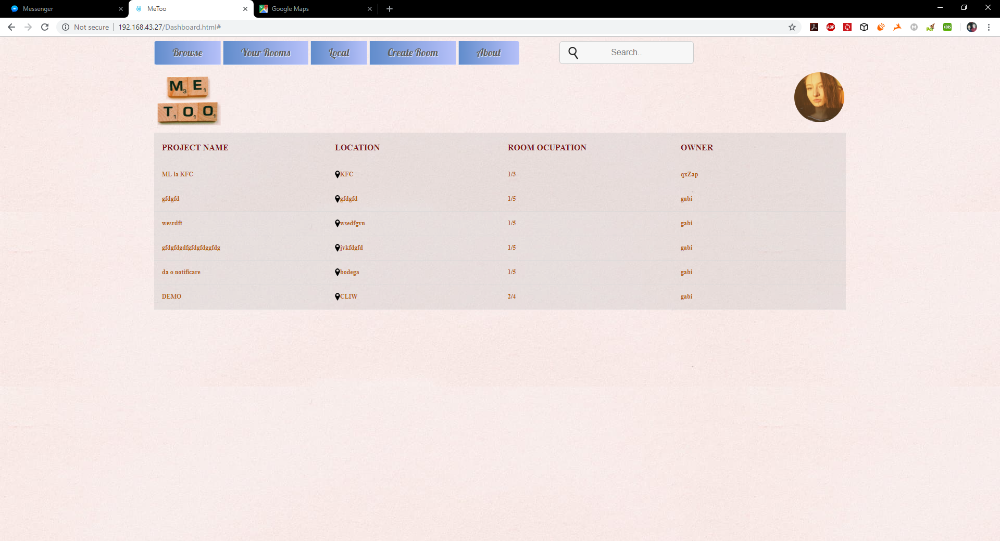
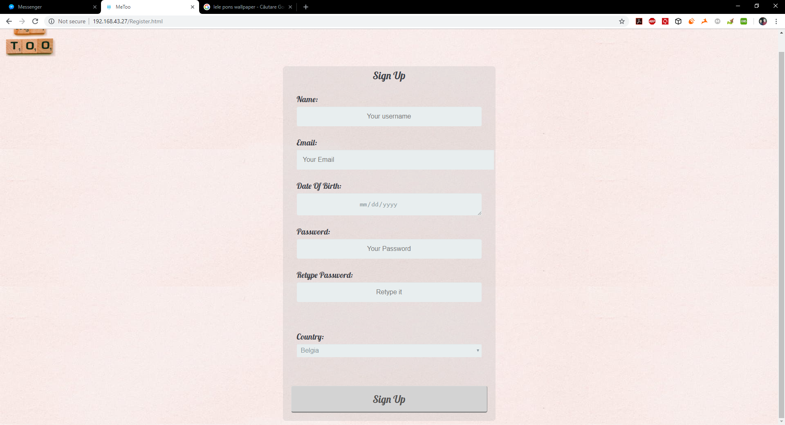
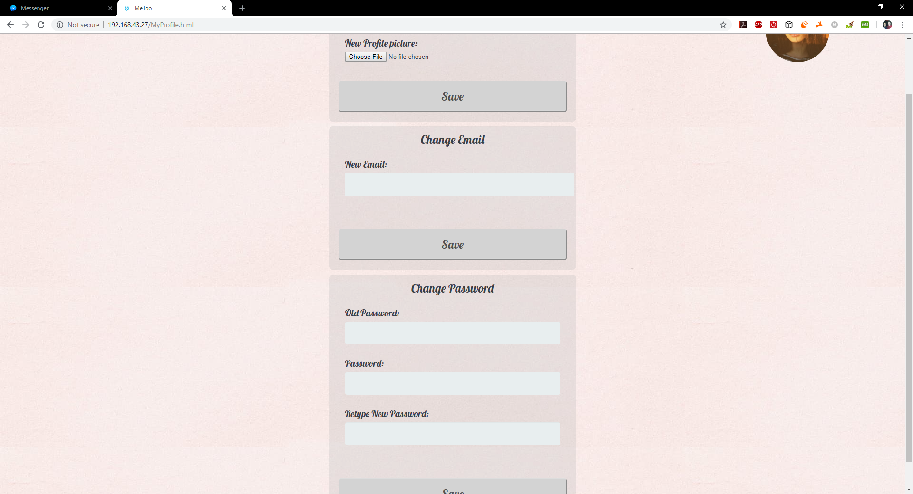
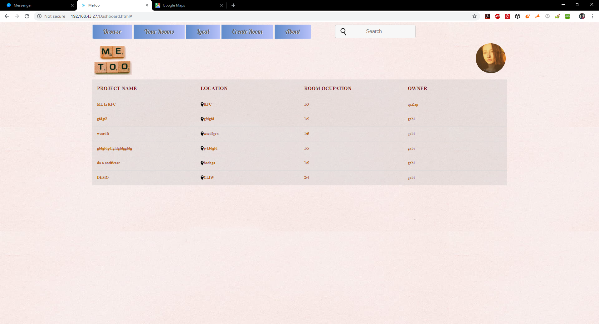
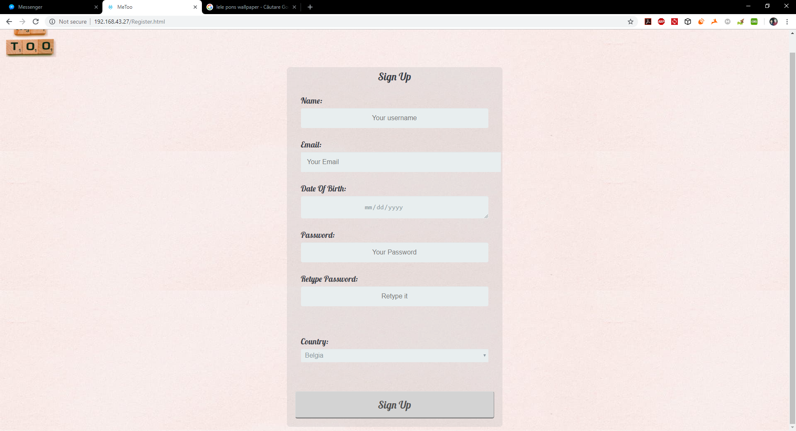
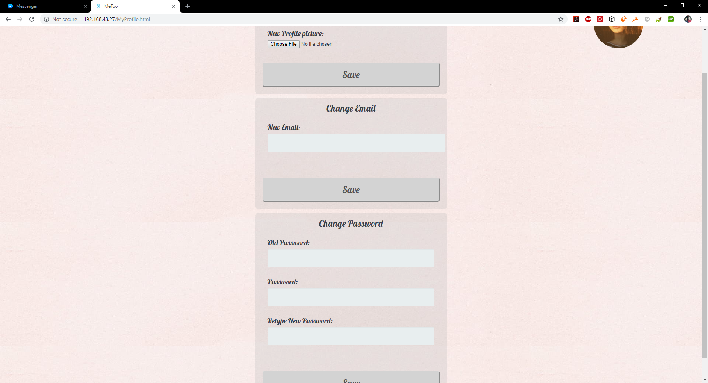

Autori
-
Milea Mihai-Cristian I3A4
-
Gabriela Macovei I3A4
Scopul acestui raport tehnic in format Scholarly HTML este de a descrie detaliile care vizeaza progresul proiectului intitulat MeToo(meet-up web tool).
Să se dezvolte o aplicaţie de tip PWA (Progressive Web App) menită a încuraja interacţiunea dintre persoanele care studiază/lucrează în localuri comune disponibile într-un areal geografic: biblioteci, cafenele sau spaţii de co-working. Fiecare utilizator, autentificat via un cont disponibil pe o reţea socială, odată ajuns într-un astfel de spaţiu va anunţa public ce activitate efectuează – astfel de mesaje vor putea fi parametrizate (de exemplu, "implementez
Site-ul nostru ofera utilizatorului o interfata intuitiva si placuta si posibilitatea gasirii unor coechipieri de lucru la diverse proiecte in functie de locatia utilizatorilor. Utilizatorul poate sa isi aleaga echipa in care vrea sa lucreze in functie de preferinte (limbaj, scop, castig, etc.)
Pentru a putea detalia tehnologiile folosite in cadrul aplicatiei este necesara reamintirea unor notiuni teoretice utilizare in dezvoltarea site-ului.
Interfata a fost construita folosind HTML5 si stilizata folosind CSS3. HTML5 este un limbaj folosit pentru structurarea si prezentarea continutului pentru World Wide Web, o tehnologie nucleu pentru Internet, iar CSS reprezinta acronimul pentru Cascading Style Sheets. CSS este un limbaj (style language) care defineste "layout-ul" pentru documentele HTML. CSS acopera culori, font-uri, margini, linii, imagini de fundal, pozitii avansate si multe alte optiuni utile in design.
More to be added..
Interfata de login a unui utilizator necesita 2 campuri, un cont de utilizator unic si parola aferenta acestuia.
In cazul in care vizitatorul doreste sa isi creeze cont acesta va fi redirectionat spre o noua pagina unde i se va oferi aceasta posibilitate.
Interfata de inregistrare cuprinde mai multe campuri obligatorii pentru crearea unui nou cont.
Dupa ce utilizatorul s-a logat, acesta va avea urmatoarele optiuni:
Serverul consta intr-un api in python, utilizand BaseHTTPServer, baza de date va avea 3 tabele SQL si una NoSQL si ruleaza in acelasi environment.
Tabele:
In mare utilizatorul va avea un cod js incarcat in browser care va face cereri la server iar pentru manevrarea evenimentelor exista urmatoarele module:
Sesiunea se pastreaza prin token de access: utilizatorul va avea atribuit un token de access pana cand va da logout. Astfel, atunci cand utilizatorul revine pe site nu va fi nevoit sa isi introduca datele de login iar.
Este necesar ca preluarea datelor cu privire la conversatiile intre utilizatori sa se petreaca intr-un timp cat mai scurt. DynamoDB pune o solutie prin utilizarea hash-ului. Se face hash peste user_id intre utilizatori gen: "uid1-uid2", pentru a obtine mesajele in o(1).
Prelucrearea datelor este mai usoara si mai sigura in python, deoarece pentru obtinerea datelor dintr-un json se face in putine linii de cod.
auxToken = request['token']
Observatie: pentru a distinge utilizatorii in cazul in care se doreste de exemplu modificarea datelor cu privire la un utilizator se foloseste tokenul de access.
| Metoda | Ruta | Ce se intampla? |
| GET | /roominfo/string:roomid | Returneaza informatii legate de un room |
| POST | /newroom | Se trimite un json cu datele legate de noua camera |
| POST | /editroom/string:roomid | Se trimite un json cu datele legate de camera ce se doreste a fi modificata |
| DELETE | /deleteroom/string:roomid | Se sterge camera cu id-ul roomid |
| POST | /newuser | Se trimite un json cu datele de register ale unui potential nou utilizator |
| POST | /login | Se trimite un json cu datele de login ale unui utilizator si trebuiesc validate |
| GET | /getrooms | Se trimite un json cu conditiile camerei (ex: sa nu fie plina, sa contina keyword 'scala' etc) intr-un range de maxim 30km |
| POST | /chat/string:uid2 | Se trimite un json cu mesajul pe care vrea utilizatorul sa il trimita altui utilizator (uid2) |
| GET | /chat/string:uid2 | Se returneaza cateva din mesajele din conversatia intre cei doi utilizatori si messid de la primul mesaj din cele selectate |
| GET | /user/string:uid | Se returneaza setarile sau informatiile publice legate de utilizatorul cu id-ul uid |
| POST | /user/string:uid | Se trimite un json cu datele ce se doresc a fi rescrise cu privire la setarile utilizatorului |
| GET | /users/keywords?=string:keyword1... , string:keywordN | Se returneaza un json cu toti utilizatorii ce par a se incadra in ceea ce ar putea cauta un utilizator. |

 





| Denumire | URL |
|---|---|
| E-learn | http://www.e-learn.ro/tutorial/css/ce-este-css-a/67/1/37.htm |
| Wikipedia | https://ro.wikipedia.org/wiki/HTML5 |
| Scholarly | http://scholarly.vernacular.io/ |
| BaseHHTPServer - python | https://docs.python.org/2/library/basehttpserver.html |
| Python | https://www.python.org/ |
| DynamoDB | https://aws.amazon.com/it/dynamodb/ |
| MySQL | https://www.mysql.com/ |